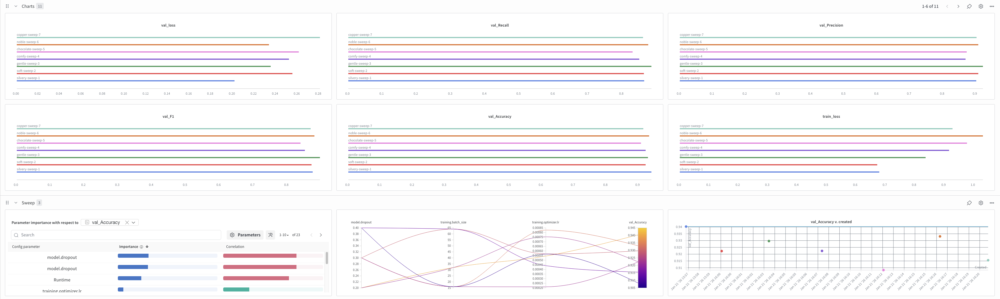
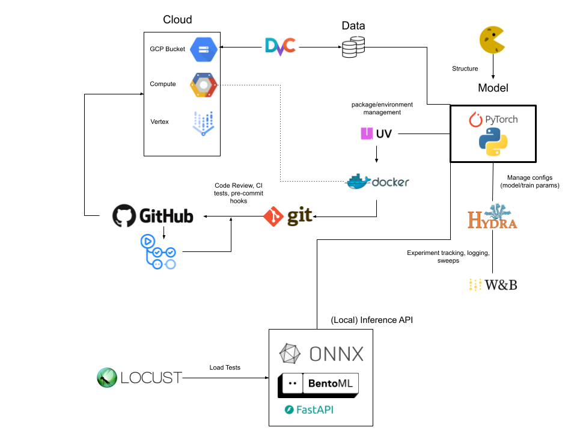

Operations
This is the report template for the exam. Please only remove the text formatted as with three dashes in front and behind like:
--- question 1 fill here ---
Where you instead should add your answers. Any other changes may have unwanted consequences when your report is
auto-generated at the end of the course. For questions where you are asked to include images, start by adding the image
to the figures subfolder (please only use .png, .jpg or .jpeg) and then add the following code in your answer:

In addition to this markdown file, we also provide the report.py script that provides two utility functions:
Running:
bash
python report.py html
Will generate a .html page of your report. After the deadline for answering this template, we will auto-scrape
everything in this reports folder and then use this utility to generate a .html page that will be your serve
as your final hand-in.
Running
bash
python report.py check
Will check your answers in this template against the constraints listed for each question e.g. is your answer too short, too long, or have you included an image when asked. For both functions to work you mustn't rename anything. The script has two dependencies that can be installed with
bash
pip install typer markdown
or
bash
uv add typer markdown
The checklist is exhaustive which means that it includes everything that you could do on the project included in the curriculum in this course. Therefore, we do not expect at all that you have checked all boxes at the end of the project. The parenthesis at the end indicates what module the bullet point is related to. Please be honest in your answers, we will check the repositories and the code to verify your answers.
data.py file such that it downloads whatever data you need and preprocesses it (if necessary) (M6)model.py and a training procedure to train.py and get that running (M6)requirements.txt/requirements_dev.txt files or keeping your
pyproject.toml/uv.lock up-to-date with whatever dependencies that you are using (M2+M6)pep8) while doing the project (M7)Enter the group number you signed up on
Answer:
120
Enter the study number for each member in the group
Example:
sXXXXXX, sXXXXXX, sXXXXXX
Answer:
s256835, s253745, s215172, s215196, s194799
Did you end up using any open-source frameworks/packages not covered in the course during your project? If so which did you use and how did they help you complete the project?
Recommended answer length: 0-200 words.
Example: We used the third-party framework ... in our project. We used functionality ... and functionality ... from the package to do ... and ... in our project.
Answer:
We didn't use any open-source frameworks not covered in the course.
In the following section we are interested in learning more about you local development environment. This includes how you managed dependencies, the structure of your code and how you managed code quality.
Explain how you managed dependencies in your project? Explain the process a new team member would have to go through to get an exact copy of your environment.
Recommended answer length: 100-200 words
Example: We used ... for managing our dependencies. The list of dependencies was auto-generated using ... . To get a complete copy of our development environment, one would have to run the following commands
Answer:
We managed dependencies with uv and a pyproject.toml, pinning exact versions via uv.lock for reproducibility. The lock file is committed, so anyone can resolve and install the same versions locally or in Docker.
To reproduce the environment on Linux:
Install uv Clone the repo and cd into it. Create and sync the virtual environment from the lock file: uv sync Activate it: source .venv/bin/activate Verify: python -V and uv pip list
In containers, the Dockerfiles copy pyproject.toml and uv.lock and run uv sync, guaranteeing the same resolved set. If dev-only tools are grouped, run uv sync --group dev to include them.
We expect that you initialized your project using the cookiecutter template. Explain the overall structure of your code. What did you fill out? Did you deviate from the template in some way?
Recommended answer length: 100-200 words
Example: From the cookiecutter template we have filled out the ... , ... and ... folder. We have removed the ... folder because we did not use any ... in our project. We have added an ... folder that contains ... for running our experiments.
Answer:
From the cookiecutter template we have filled out the src/, tests/, models/ folders. The src/ folder contains the standard files relating to ML coding but also some additional files to test model inference. We do not include a data/ folder in the project directory but instead have a data/ subfolder within src/ where dataset locations, split ratios, and output paths are defined using Hydra. As such, we have a configshydra/ folder containing .yaml configuration files. We also have added a dockerfiles/, wandb/, and outputs/ folder to support containerized workflows, experiment tracking generated using wandb, and to store outputs, respectively.
Did you implement any rules for code quality and format? What about typing and documentation? Additionally, explain with your own words why these concepts matters in larger projects.
Recommended answer length: 100-200 words.
Example: We used ... for linting and ... for formatting. We also used ... for typing and ... for documentation. These concepts are important in larger projects because ... . For example, typing ...
Answer:
We used ruff format the format our .py files. and also tried to follow the PEP8 styling guide whereever possible (naming classes and functions, line length, etc.).
These concepts are important in larger projects as it makes it easier for other members in the group to read and understand the code. Furthermore, having consistent formatting and linting ensures that all members of the project follow the same conventions. As a result, collaboration is improved and code reviews are less tedious and more efficient.
In the following section we are interested in how version control was used in your project during development to corporate and increase the quality of your code.
How many tests did you implement and what are they testing in your code?
Recommended answer length: 50-100 words.
Example: In total we have implemented X tests. Primarily we are testing ... and ... as these the most critical parts of our application but also ... .
Answer:
We have implemented 7 tests across three modules to ensure the reliability of our application.
For the data module (test_data.py), we have 3 tests that verify the dataset class can correctly load data, checks the properties of the loaded data (like length and content), and handles missing files gracefully.
For the model (test_model.py), we have a parameterized test that validates the model's forward pass. It checks that for different batch sizes (a single image and a full batch), the output tensor has the correct shape and data type.
For the API (test_api.py), we have 3 tests: one checks the /cv_model/ endpoint with a valid PNG image, another verifies the behavior when no file is provided, and the last tests the response to a non-image file.
What is the total code coverage (in percentage) of your code? If your code had a code coverage of 100% (or close to), would you still trust it to be error free? Explain you reasoning.
Recommended answer length: 100-200 words.
Example: The total code coverage of code is X%, which includes all our source code. We are far from 100% coverage of our ** code and even if we were then...*
Answer:
Even with 100% code coverage, the code would not be guaranteed error free. Coverage only says every line ran at least once, not that the tests used meaningful assertions, covered edge cases, or validated behavior under realistic conditions and failure scenarios. Logic bugs, integration issues, and unexpected inputs can still slip through if tests are shallow. In our project, the model tests reach 100% coverage, the data tests reach 90%, and the API tests reach 40%, which gives some confidence but still leaves space for untested paths and subtle bugs.
Did you workflow include using branches and pull requests? If yes, explain how. If not, explain how branches and pull request can help improve version control.
Recommended answer length: 100-200 words.
Example: We made use of both branches and PRs in our project. In our group, each member had an branch that they worked on in addition to the main branch. To merge code we ...
Answer:
We made use of both branches and PRs in our project. Every time we wanted to develop a new feature, we pulled the most recent version of the main branch on the remote repo, developed our feature and then pushed the changes. Subsequently, a pull request was opened and a reviewer was assigned to look at the changes. The repo rules were configured in such a way that a merge to main was impossible without a review. In the case of merge conflicts, they were resolved on the github web editor. In general, we encountered only minor merge conflicts by communicating with each other and creating feature branches that made changes in a highly localized region of the codebase.
Did you use DVC for managing data in your project? If yes, then how did it improve your project to have version control of your data. If no, explain a case where it would be beneficial to have version control of your data.
Recommended answer length: 100-200 words.
Example: We did make use of DVC in the following way: ... . In the end it helped us in ... for controlling ... part of our pipeline
Answer:
We used DVC for managing data in our project. Initially, we set up DVC with Google Drive as the remote storage. This allowed us to version control our data efficiently by creating small metafiles that pointed to the actual data stored remotely. We used commands like dvc init to initialize DVC in our repository, dvc remote add to configure Google Drive as the remote storage, and dvc add to track our dataset. This setup ensured that our data was not stored in the Git repository, avoiding large file issues, while still allowing us to track changes and share data easily.
Although we did not make changes to the data during the project, DVC would be useful in scenarios where data evolves, such as adding new samples or modifying preprocessing steps. By using dvc push and dvc pull, we ensured that all team members could access the same version of the data, improving collaboration and reproducibility.
Discuss you continuous integration setup. What kind of continuous integration are you running (unittesting, linting, etc.)? Do you test multiple operating systems, Python version etc. Do you make use of caching? Feel free to insert a link to one of your GitHub actions workflow.
Recommended answer length: 200-300 words.
Example: We have organized our continuous integration into 3 separate files: one for doing ..., one for running ... testing and one for running ... . In particular for our ..., we used ... .An example of a triggered workflow can be seen here:
Answer:
We have organized our continuous integration (CI) setup into three separate workflow files to ensure code quality, proper formatting, and functionality. First, our Code Check workflow (see codecheck.yaml) handles static analysis. It uses ruff for both code quality checks and formatting verification, and mypy for type checking. Secondly, we have a Pre-commit CI workflow (see pre_commit.yaml) that runs pre-commit hooks on every push and pull request, automatically committing fixes if necessary. Finally, our Run tests workflow (test.yaml) is responsible for running unit tests using pytest (see more about these tests in the following sections) and, upon success, submitting a build to Google Cloud Build using gcloud. We note that for our pre-commit workflow, we configured it so that if some tests fail during the pre-commit checks, it will continue to the next steps. For instance, if there are formatting errors, the action should continue to the formatting step. We currently run all jobs on the ubuntu-latest operating system and specifically use Python version 3.12. We do not currently test a list of multiple operating systems or Python versions. We utilize caching to speed up our workflows; specifically, we use the astral-sh/setup-uv action to enable caching for our dependencies (uv.lock), and we also explicitly cache .mypy_cache to improve the performance of our type checking steps. https://github.com/Anushri2706/02476-Group120/actions
In the following section we are interested in learning more about the experimental setup for running your code and especially the reproducibility of your experiments.
How did you configure experiments? Did you make use of config files? Explain with coding examples of how you would run a experiment.
Recommended answer length: 50-100 words.
Example: We used a simple argparser, that worked in the following way: Python my_script.py --lr 1e-3 --batch_size 25
Answer:
We used Hydra for configuration management, with our main config at configshydra/config.yaml composing sub-configs for data, model, and training. We made the model and optimizer configurable by defining their specific Python object targets (e.g., target) in the YAML files, allowing dynamic instantiation. To run an experiment with overrides, we use the command line: python -m src.mlops.train training.optimizer.lr=0.001 training.batch_size=32
We also save the full configuration dictionary inside the model checkpoint (.pth). This ensures we always initialize the correct model architecture when loading weights, even if local config files have changed.
Reproducibility of experiments are important. Related to the last question, how did you secure that no information is lost when running experiments and that your experiments are reproducible?
Recommended answer length: 100-200 words.
Example: We made use of config files. Whenever an experiment is run the following happens: ... . To reproduce an experiment one would have to do ...
Answer:
We secured the reproducibility of our experiments by strictly controlling our environment, data, and configurations. We used uv combined with a uv.lock file to pin all dependency versions, ensuring that our Docker containers utilize the exact same Python environment everywhere. To prevent data inconsistencies, we employed DVC to version control our datasets, making the exact training data trackable. Regarding experiment tracking, we used Hydra and Weights & Biases to log the complete resolved configuration for every training run. Crucially, we saved this configuration alongside our model checkpoint (best_model.pth), which allows us to reload the exact model architecture and settings used during training. Additionally, we ensured determinism in our pipeline by setting fixed random states for random operations like data splitting.
Upload 1 to 3 screenshots that show the experiments that you have done in W&B (or another experiment tracking service of your choice). This may include loss graphs, logged images, hyperparameter sweeps etc. You can take inspiration from this figure. Explain what metrics you are tracking and why they are important.
Recommended answer length: 200-300 words + 1 to 3 screenshots.
Example: As seen in the first image when have tracked ... and ... which both inform us about ... in our experiments. As seen in the second image we are also tracking ... and ...
Answer:
'' We used Weights & Biases to track our experiments and visualize performance. As seen in the training script, we logged the following metrics for both training and validation sets: Loss (CrossEntropyLoss): This is our primary objective function. Tracking both training and validation loss allows us to monitor convergence and identify overfitting (e.g., if validation loss begins to increase while training loss decreases). Accuracy: This gives us a high-level overview of the model's correct predictions. Precision, Recall, and F1 Score: Since the GTSRB dataset contains multiple classes which may be imbalanced, these metrics provide a more nuanced view of performance than simple accuracy, ensuring the model performs well across all traffic sign types. To optimize our model, we ran a hyperparameter sweep using wandb sweep (defined in sweep.yaml) where we varied training.optimizer.lr and model.dropout. As shown in the attached figure, our limited sweep suggested that adding dropout had a generally negative effect on model performance for this architecture. Conversely, we observed a slight correlation between a higher learning rate and increased validation accuracy, although the search space was not exhaustive.
The figure is of our wandb sweep dashboard were different mdetric are visuzalied for the models run during the sweep. A summary bar chart is useful for understanding the influence of the hyperparameters on val accuracy (one single metric)
Docker is an important tool for creating containerized applications. Explain how you used docker in your experiments/project? Include how you would run your docker images and include a link to one of your docker files.
Recommended answer length: 100-200 words.
Example: For our project we developed several images: one for training, inference and deployment. For example to run the training docker image:
docker run trainer:latest lr=1e-3 batch_size=64. Link to docker file:Answer:
Ansuhri
When running into bugs while trying to run your experiments, how did you perform debugging? Additionally, did you try to profile your code or do you think it is already perfect?
Recommended answer length: 100-200 words.
Example: Debugging method was dependent on group member. Some just used ... and others used ... . We did a single profiling run of our main code at some point that showed ...
Answer:
Debugging strategies varied among team members. We primarily relied on logging to track variable states and breakpoints for interactive inspection. To accelerate debugging cycles, specifically for testing pipelines that run after training, we often reduced the dataset size or trained for a single epoch to bypass long training times. We also utilized pair programming (a "rubber duck" approach), where one member wrote code while others reviewed logic in real-time to catch errors early.
Regarding profiling, we did not assume our code was perfect. We implemented a dedicated benchmarking script (src/mlops/benchmarking.py) to profile our model's inference performance. This script measures and compares inference latency and model size across different optimization techniques, specifically testing standard, pruned, and quantized versions of the model. This allowed us to quantitatively assess the speedups and compression rates achieved, rather than relying on assumptions.
In the following section we would like to know more about your experience when developing in the cloud.
List all the GCP services that you made use of in your project and shortly explain what each service does?
Recommended answer length: 50-200 words.
Example: We used the following two services: Engine and Bucket. Engine is used for... and Bucket is used for...
Answer:
Anushri
The backbone of GCP is the Compute engine. Explained how you made use of this service and what type of VMs you used?
Recommended answer length: 100-200 words.
Example: We used the compute engine to run our ... . We used instances with the following hardware: ... and we started the using a custom container: ...
Answer:
Anushri
Insert 1-2 images of your GCP bucket, such that we can see what data you have stored in it. You can take inspiration from this figure.
Answer:
Anushri/Toma
Upload 1-2 images of your GCP artifact registry, such that we can see the different docker images that you have stored. You can take inspiration from this figure.
Answer:
Anushri
Upload 1-2 images of your GCP cloud build history, so we can see the history of the images that have been build in your project. You can take inspiration from this figure.
Answer:
Anushri
Did you manage to train your model in the cloud using either the Engine or Vertex AI? If yes, explain how you did it. If not, describe why.
Recommended answer length: 100-200 words.
Example: We managed to train our model in the cloud using the Engine. We did this by ... . The reason we choose the Engine was because ...
Answer:
Anushri(sad)
Did you manage to write an API for your model? If yes, explain how you did it and if you did anything special. If not, explain how you would do it.
Recommended answer length: 100-200 words.
Example: We did manage to write an API for our model. We used FastAPI to do this. We did this by ... . We also added ... to the API to make it more ...
Answer:
We did manage to write an API for our model using FastAPI. The API is designed to handle image classification tasks.
First, the API accepts an image file through a POST request to the /cv_model/ endpoint. The image is uploaded as a file and read into memory.
During the API's initialization, the latest trained model is loaded. The model's configuration and weights are retrieved from a checkpoint file (best_model.pth) stored in the latest directory. Hydra is used to manage the configuration, ensuring that the model is instantiated with the correct architecture and parameters.
The uploaded image is preprocessed to match the input size expected by the model. This includes resizing the image to the dimensions specified in the model's configuration and converting it into a tensor.
The preprocessed image is passed through the model to generate predictions. The model outputs class probabilities, and the API extracts the class with the highest probability.
The API returns a JSON response containing the predicted class, the associated probability, and the filename of the uploaded image. If the model is not loaded or an error occurs, the API returns an appropriate error message.
+Nick
Did you manage to deploy your API, either in locally or cloud? If not, describe why. If yes, describe how and preferably how you invoke your deployed service?
Recommended answer length: 100-200 words.
Example: For deployment we wrapped our model into application using ... . We first tried locally serving the model, which worked. Afterwards we deployed it in the cloud, using ... . To invoke the service an user would call
curl -X POST -F "file=@file.json"<weburl>Answer:
We managed to deploy our API locally but were unable to deploy it in the cloud because we could not run the model in the cloud. For deployment, we implemented the API in Docker. We created a Docker image containing the API endpoint, which is defined in api.py. The Dockerfile for the API ensures that all dependencies are installed, and the FastAPI application is properly configured.
Once the Docker image was built, we ran the container locally to serve the API. The API could then be invoked by sending a POST request to the /cv_model/ endpoint. To simplify the process, we implemented a task in tasks.py that allows us to run the API container with a single command. For example, the inv api task runs "uv run uvicorn src.{PROJECT_NAME}.api:app --host 0.0.0.0 --port 8000 --reload".
This setup allowed us to test the API locally in a containerized environment, ensuring consistency and reproducibility. However, since we could not deploy the model in the cloud, we were unable to test the API in a cloud environment. +Nick
Did you perform any unit testing and load testing of your API? If yes, explain how you did it and what results for the load testing did you get. If not, explain how you would do it.
Recommended answer length: 100-200 words.
Example: For unit testing we used ... and for load testing we used ... . The results of the load testing showed that ... before the service crashed.
Answer:
We performed both unit and load testing of our API.
For unit testing, we used pytest and FastAPI's TestClient. The tests in test_api.py include validating the /cv_model/ endpoint with a valid PNG image to ensure proper handling of requests, verifying a 422 error for missing files, and testing non-image payloads to confirm graceful error handling. Since the model is not loaded in the test environment, we also confirmed that the API returns a 500 status code and an appropriate error message ("Model not loaded. Check server logs.") when the model is unavailable. We performed load testing of our API using Locust. The load testing script is defined in locustfile.py, where we simulate multiple users sending POST requests to the /cv_model/ endpoint with randomly generated 64x64 PNG images. The TARGET_HOST environment variable allows us to dynamically specify the API's host during testing.
For the test, we used the same load parameters as described in the course: 10 users with a ramp-up rate of 1 user per second and a total runtime of 1 minute. The results showed that the API handled all requests successfully without any failures.
Did you manage to implement monitoring of your deployed model? If yes, explain how it works. If not, explain how monitoring would help the longevity of your application.
Recommended answer length: 100-200 words.
Example: We did not manage to implement monitoring. We would like to have monitoring implemented such that over time we could measure ... and ... that would inform us about this ... behaviour of our application.
Answer:
Brandon
In the following section we would like you to think about the general structure of your project.
How many credits did you end up using during the project and what service was most expensive? In general what do you think about working in the cloud?
Recommended answer length: 100-200 words.
Example: Group member 1 used ..., Group member 2 used ..., in total ... credits was spend during development. The service costing the most was ... due to ... . Working in the cloud was ...
Answer:
--- question 27 fill here ---
Did you implement anything extra in your project that is not covered by other questions? Maybe you implemented a frontend for your API, use extra version control features, a drift detection service, a kubernetes cluster etc. If yes, explain what you did and why.
Recommended answer length: 0-200 words.
Example: We implemented a frontend for our API. We did this because we wanted to show the user ... . The frontend was implemented using ...
Answer:
BRandon
Include a figure that describes the overall architecture of your system and what services that you make use of. You can take inspiration from this figure. Additionally, in your own words, explain the overall steps in figure.
Recommended answer length: 200-400 words
Example:
The starting point of the diagram is our local setup, where we integrated ... and ... and ... into our code. Whenever we commit code and push to GitHub, it auto triggers ... and ... . From there the diagram shows ...
Answer:
''
Discuss the overall struggles of the project. Where did you spend most time and what did you do to overcome these challenges?
Recommended answer length: 200-400 words.
Example: The biggest challenges in the project was using ... tool to do ... . The reason for this was ...
Answer:
Gen org. Intial writing of the model (config) Testing. docker version control/drive/kaggle (merge problems, data acquisiton problems) GCP
State the individual contributions of each team member. This is required information from DTU, because we need to make sure all members contributed actively to the project. Additionally, state if/how you have used generative AI tools in your project.
Recommended answer length: 50-300 words.
Example: Student sXXXXXX was in charge of developing of setting up the initial cookie cutter project and developing of the docker containers for training our applications. Student sXXXXXX was in charge of training our models in the cloud and deploying them afterwards. All members contributed to code by... We have used ChatGPT to help debug our code. Additionally, we used GitHub Copilot to help write some of our code. Answer:
--- question 31 fill here ---
{kind=link}
{kind=link}
{kind=link}
{kind=link}
{kind=link}